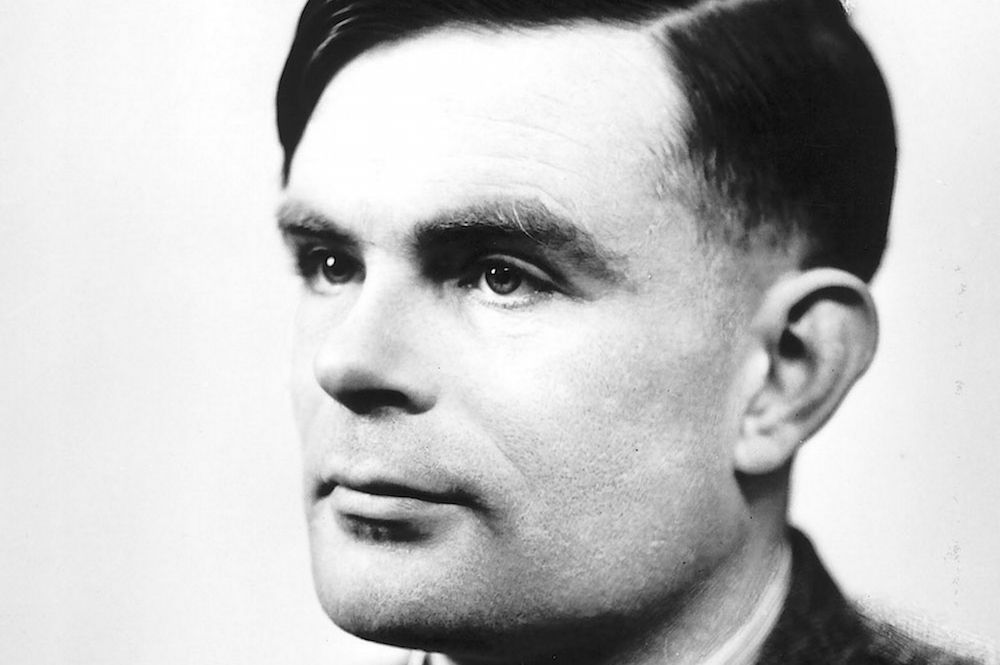
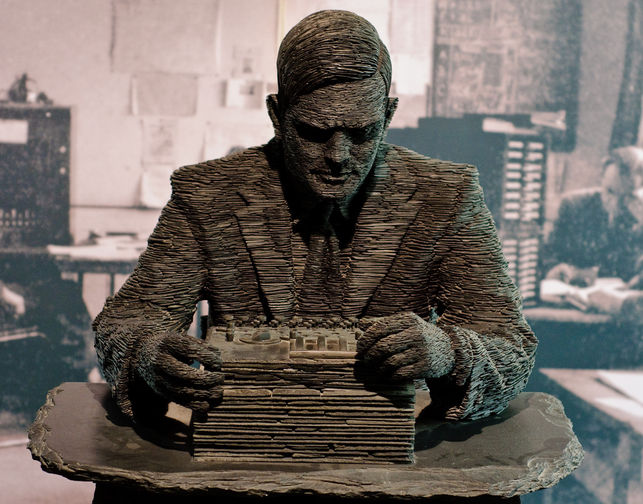

Alan Turing. Ganador del premio Smith (1936), miembro de la Royal Society (1951) entre otras distinciones. Nacido en la mejor epoca para ayudar al planeta, pero condenado por ser homosexual.
Alan Turing era un matematico apasionado por los acertijos, resolvio quizas el mas retador en su vida, logro desifrar los mensajes encriptados que se enviavan los Nazis en la segunda guerra mundial. Pero al igual que Khaterine G. Jhonson paso desapersibido hasta el estreno de la pelicula "El codigo enigma". A pesar de este gran logro fue condenado por ser homosexual y recibio el perdon real por parte de la reina Isabel II 60 años despues de su muerte.


Alan Turing
Estatua de Alan Turing (Bletchley Park, Reino Unido)